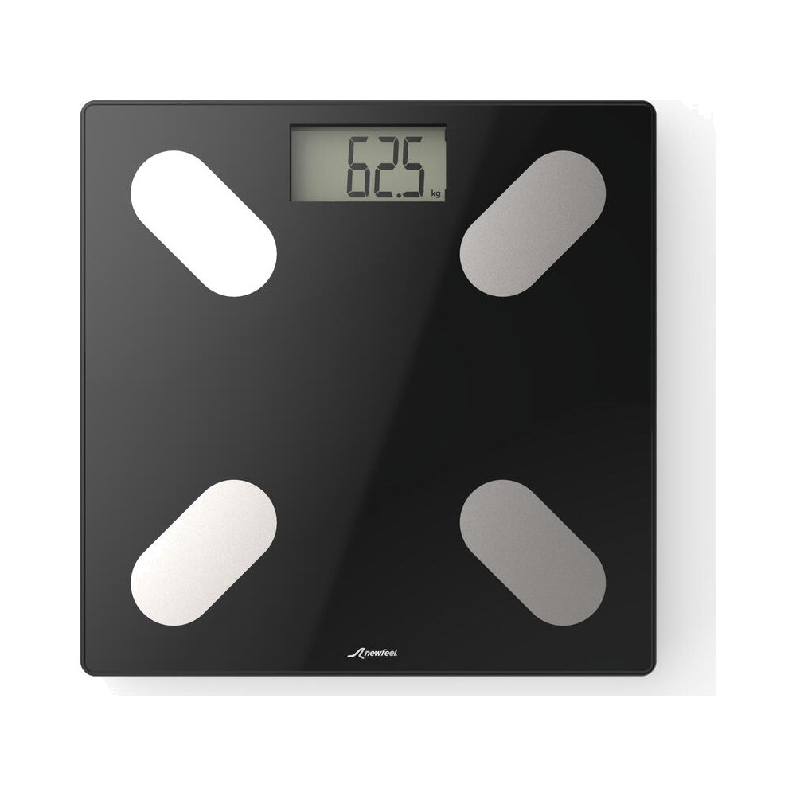
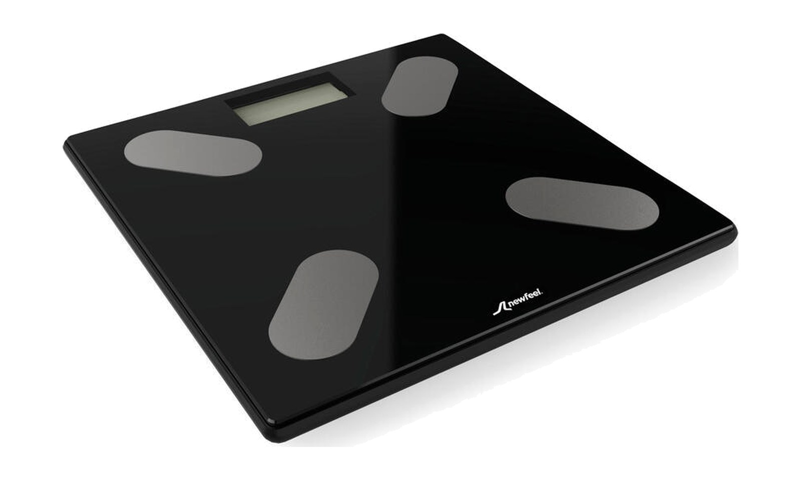

Convencional vs bioimpedancia
Mide el peso. Estima el resto.

Scale 100

Scale 500
vs
Corriente muy débil
Convencional
Mide: peso
Bioimpedancia
Mide: peso · Estima: grasa y músculo
Lo que te muestra la pantalla
Peso
MEDIDO
62,5 kg
% de grasa
ESTIMADO
Masa muscular
ESTIMADO
Agua corporal
ESTIMADO
Lo calcula con fórmulas a partir de la corriente: no lo mide directamente.
Su limitación
La lectura cambia según tu estado
Estimación de % de grasaRango variable
01
Hidratación
02
Comidas
recientes
recientes
03
Entreno
reciente
reciente
04
Hora
del día
del día
Misma persona, mismo día… lecturas distintas.
Conclusión
Complementaria,
no absoluta
no absoluta
Misma horaMismas condicionesMira la tendencia

Decathlon · Scale 500
Bioimpedancia